Девятнадцать дней по порядку
Подробно: что смотрим, куда идём и чем это интересно. Дни 6, 7, 17 и 18 есть только в полном варианте. Отели названы ориентировочно: бронировать их будем за год, и к тому моменту что-то может оказаться занято или подорожать. Уровень и расположение останутся теми же, названия могут поменяться.
чт–пт
Прилёт и Новый год в Окленде
Прилетаем 30 декабря, вечер свободный. 31-го берём русскоязычного гида на полдня, а вечером встречаем Новый год. Новый год приходит сюда раньше, чем почти куда-либо на планете: тут уже первое января, когда в Москве до курантов ещё десять часов. Город в эту ночь выходит на набережную, фейерверк бьют с телебашни Sky Tower.
Окленд это крупнейший город страны, полтора миллиона человек, и стоит он на перешейке между двумя заливами, а заодно на полусотне потухших вулканов. На один из них, Маунт-Иден, поднимаемся пешком минут за двадцать: сверху видно сразу два океана, Тасманово море с одной стороны и Тихий с другой. Вечером ужин в одном из лучших ресторанов города.
Полдня 31 декабря мы проводим с русскоязычным гидом. Это не экскурсия для галочки, а возможность сразу разобраться, как тут всё устроено: почему город стоит на вулканах, кто такие маори и почему их язык здесь второй государственный, как себя вести на левой стороне дороги, где покупать вино и что с ним потом делать на таможне. Дальше мы сами, поэтому все вопросы лучше задать сразу.
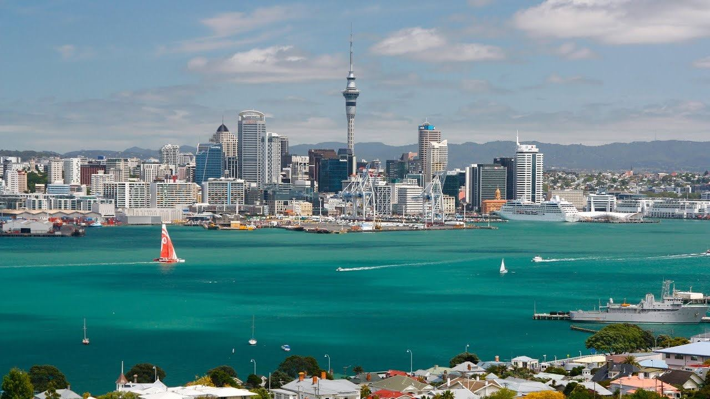
За рулём: трансфер, сами не за рулём · пешком и на такси.
Ночуем: Hotel Britomart, дизайнерский отель в отреставрированном портовом квартале, пешком до воды и ресторанов. Эконом-замена: Sudima Auckland City.
сб
Уаихеке: остров бордоских блендов
Сегодня, 1 января, забираем прокатные машины, в городе они были не нужны. Заезжаем на автомобильный паром, сорок пять минут от Окленда, и дальше по острову катаемся сами. Man O’War на восточной оконечности, туда ведёт гравийка через холмы и лес, и там единственная на острове дегустационная прямо на пляже. На Уаихеке теплее, чем на материке, поэтому тут вызревают каберне и мерло, из которых делают бордоские бленды, то есть вина в стиле Бордо. Их Larose считается главным красным такого типа в стране.
Это единственный день, когда можно по-настоящему искупаться в море. Вода в январе около двадцати одного градуса, пляжи песчаные: Онетанги длинный и открытый, Палм-Бич это тихая бухта с яхтами на якоре. Купальники в ручную кладь.
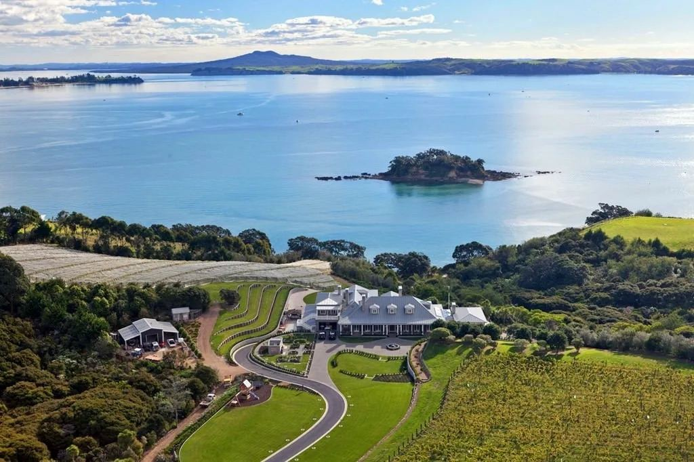
За рулём: автопаром и разъезды по острову.
Ночуем: Hotel Britomart, тот же отель, не переезжаем. Всего в Окленде три ночи подряд: заселяемся 30 декабря, съезжаем утром 2 января.
вс
Вайтомо и Хоббитон
Вайтомо это известняковые пещеры, где на потолке живут личинки грибного комарика: они светятся голубым, чтобы приманить добычу. Садишься в лодку, свет гасят, и над головой оказывается звёздное небо из тысяч огоньков. Дальше Хоббитон: декорацию Шира построили для Питера Джексона прямо на действующей овечьей ферме и после съёмок не стали разбирать. Сорок четыре норы, огороды, бельё на верёвках и паб «Зелёный дракон» с собственным пивом.
Отдельно повезло со временем: в 2026 году сюда вернулась съёмочная группа, снимали новый фильм по Толкину, «Охота на Голлума». Он выходит на экраны 17 декабря 2027 года, за одиннадцать дней до нашего вылета. То есть мы придём в декорации, которые вся планета только что увидела заново.
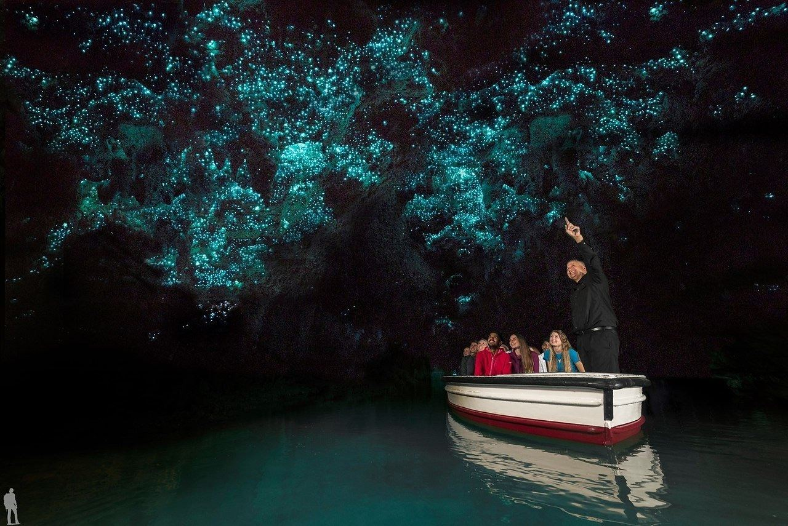
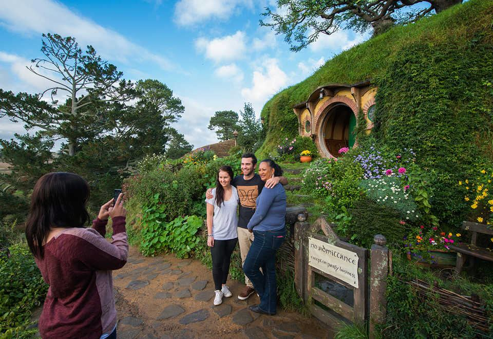
За рулём: 375 км, около 5 ч.
Ночуем: Regent of Rotorua, бутик-отель в духе шестидесятых. Открытый подогреваемый бассейн на 28 градусов и закрытый геотермальный на 39, вода своя, из-под земли. Эконом-замена: Sudima Rotorua.
пн
Роторуа: маори и кипящая земля
Роторуа стоит прямо на геотермальном поле: из трещин в земле бьёт пар, булькают грязевые котлы, и весь город пахнет сероводородом, к чему привыкаешь примерно за час. Гейзер Похуту выстреливает на тридцать метров по нескольку раз в день. В Вай-О-Тапу Шампанское озеро, оранжевое по краям от соединений мышьяка и сурьмы. Вечером едем к маори, коренному народу страны: хака, боевой танец с криком и высунутым языком, и хангу, ужин, который несколько часов томился в яме на раскалённых камнях.
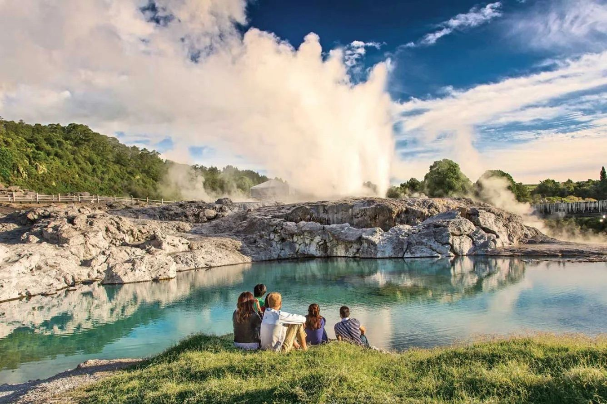
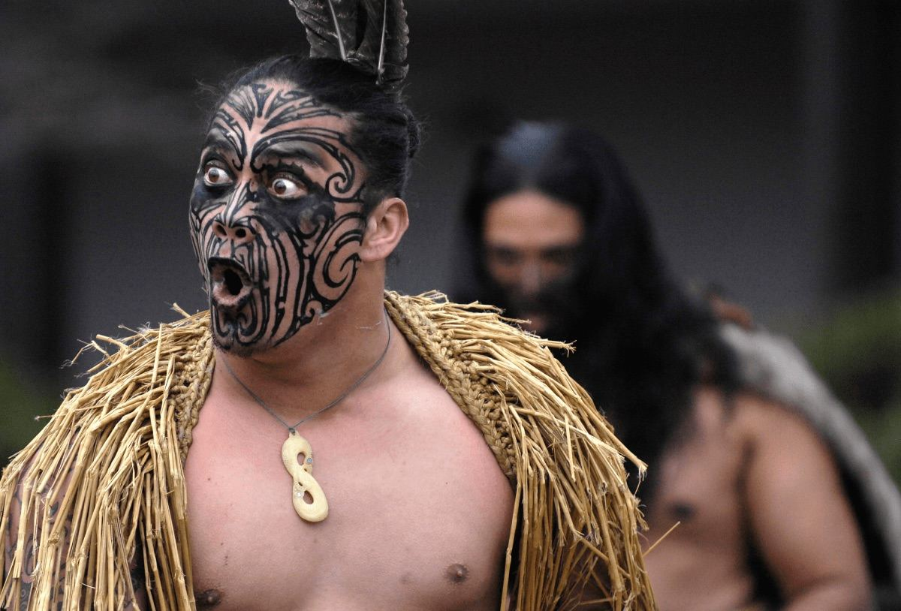
За рулём: 60 км по городу и к Вай-О-Тапу.
Ночуем: Regent of Rotorua, вторая ночь. Вечером геотермальный бассейн очень кстати после дня на ногах.
вт
Напиер только в полном
В 1931 году Напиер за две с половиной минуты разрушило землетрясением. Отстраивали сразу и в тогдашней моде, поэтому получился целый город в стиле ар-деко: пастельные фасады, строгая геометрия, зигзаги и солнца над входами. Такой сплошной застройки одной эпохи больше нет нигде в мире. Вечером гуляем по набережной Марин-Парейд. Именно гуляем: купаться там нельзя, под берегом дно резко уходит вниз и тянет сильное обратное течение, спасатели оттуда ушли на соседний пляж Ахурири.
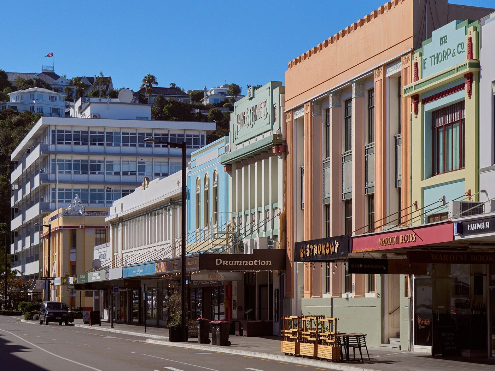
За рулём: 220 км, около 3,5 ч.
Ночуем: Art Deco Masonic прямо на Марин-Парейд: живёшь внутри той самой достопримечательности, крыша с видом на океан. В пяти минутах Ocean Spa с подогреваемыми ваннами прямо на набережной.
ср
Хокс-Бей: вино, которое не пино только в полном
Единственный регион страны, где главное не пино нуар. Тут заметно теплее, поэтому вызревают каберне и мерло, те самые сорта, из которых делают красные в Бордо, и сира, главный сорт французской долины Роны (в Австралии его же называют шираз). Сердце региона это Gimblett Gravels: кусок старого речного русла, засыпанный крупной галькой. За день она набирает тепло, ночью отдаёт его лозе, и виноград успевает дозреть. В девяностые этот участок чуть не ушёл под карьер, виноделы перекупили его с торгов. Trinity Hill делает отсюда Homage Syrah, причём из черенков, привезённых с Северной Роны, то есть с родины сорта. Te Mata работает с 1896 года, их Coleraine считается самым уважаемым красным Новой Зеландии. Обедаем в Craggy Range под пиком Те-Мата.
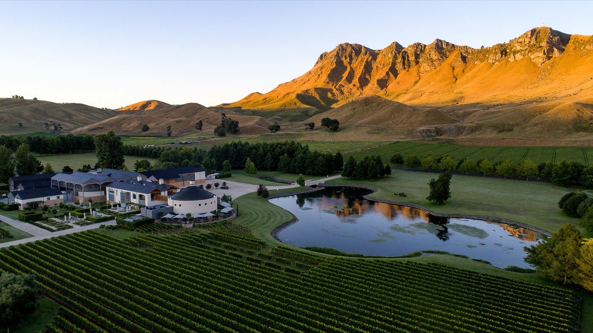
За рулём: 80 км по региону.
Ночуем: Art Deco Masonic, вторая ночь.
чт
Таупо
Озеро Таупо на самом деле кратер супервулкана размером с Сингапур: его извержение около 1800 лет назад было самым мощным на планете за последние пять тысяч лет. Водопад Хука это место, где широкая река Уаикато протискивается в пятнадцатиметровую щель: двести двадцать тысяч литров в секунду. Подходим к нему вплотную на катере.
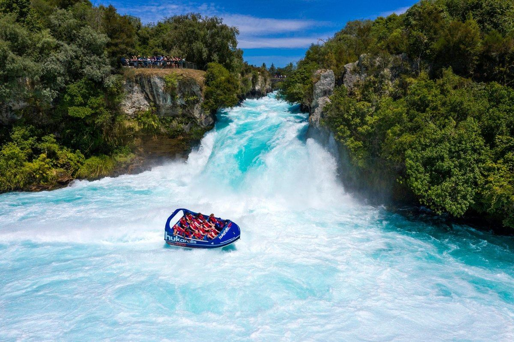
За рулём: 145 км, около 2 ч.
Ночуем: Millennium Manuels на самом берегу озера Таупо. Подогреваемый бассейн, отдельный плунж и сауна. В десяти минутах термальный DeBretts с горячими источниками.
пт
Сдаём машину, летим на юг
Возвращаемся в Окленд и сдаём машину прямо в аэропорту, оттуда и летим. Два часа лёта через всю страну, и вечером мы уже в Квинстауне, под горой Боба и над озером Вакатипу. Там снова берём машины.
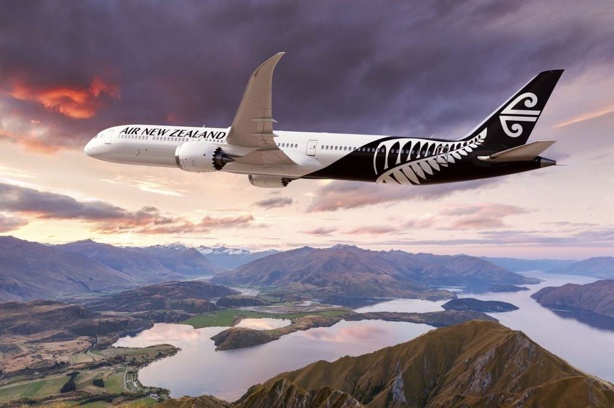
За рулём: 270 км и перелёт на юг.
Ночуем: Hotel St Moritz над озером Вакатипу. Два спа-бассейна на крыше с видом на горы и сауна. Эконом-замена: Copthorne Lakefront.
сб–пн
Ванака: три ночи, и мы никуда не едем
Это середина маршрута и единственное место, где мы стоим три ночи и при этом никуда не едем: в Окленде ночей тоже три, но там каждый день куда-то выбираемся. Специально не в Квинстауне: там шумно, очереди и цены курорта. Ванака вчетверо меньше, тише и спокойнее, и после восьми дней переездов это именно то, что нужно.
День 10, 8 января. Переезжаем из Квинстауна через перевал Кроун-Рейндж, самую высокую асфальтовую дорогу страны: семьдесят километров и полтора часа с остановками на смотровых. Заселяемся, и дальше вечер на берегу озера.
День 11, 9 января. Утром идём в Rippon, семейную винодельню, где лозы террасами спускаются к самой воде. После обеда ничего не запланировано: отель стоит прямо на берегу, так что можно честно не выходить за ворота.
День 12, 10 января. Полностью свободный день, каждый берёт своё: подъём на Рой-Пик ради вида, который все знают по открыткам, каяк или сапборд по озеру, велосипед вдоль берега, Puzzling World с комнатами-иллюзиями, кофейни и местные пивоварни.
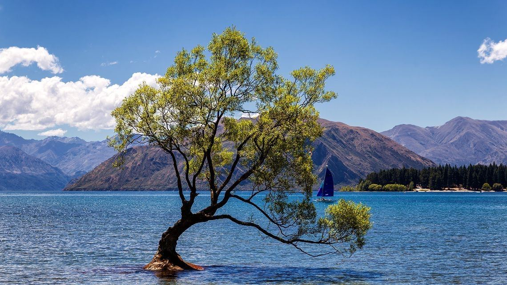
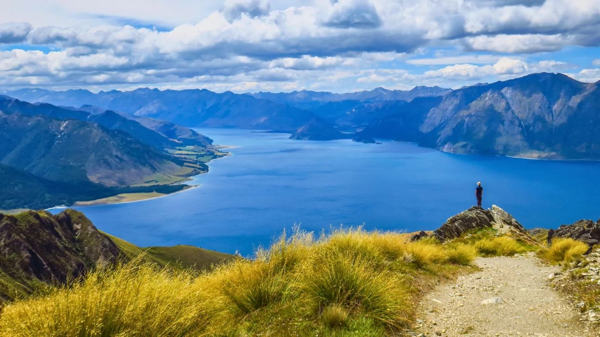
За рулём: 70 км, около 1,5 ч.
Ночуем: Edgewater на берегу озера Ванака, три ночи подряд. Джакузи с подогревом, сауна, теннис и каяки на берегу. Озеро летом прогревается до 16–18 и в нём купаются прямо с берега.
вт
Аораки, Маунт-Кук
Дорога идёт вдоль озера Пукаки, вода в нём мутно-бирюзовая из-за ледниковой муки, мельчайшей каменной пыли, которую перетёр ледник. Устраиваем на берегу пикник с видом на гору. Днём идём трек по долине Хукер: ровная тропа, три подвесных моста, три часа в оба конца, в конце озеро с плавающими айсбергами. Желающие улетают на вертолёте с посадкой на леднике Тасмана, это самый длинный ледник страны.
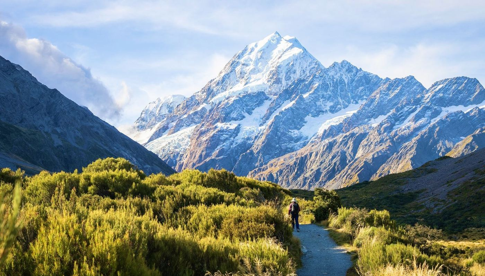
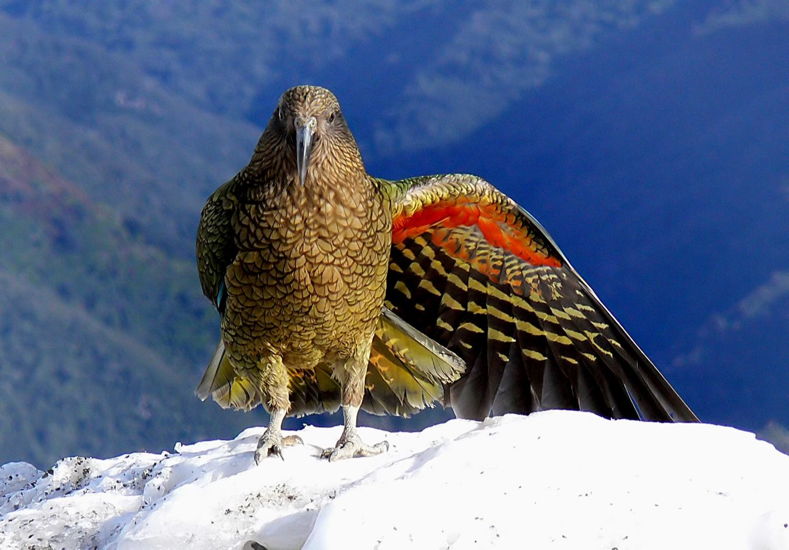
За рулём: 210 км, около 3 ч.
Ночуем: The Hermitage в деревне Маунт-Кук: единственное место, где Аораки видно прямо из окна номера. При отеле планетарий и центр Эдмунда Хиллари. Эконом-замена: Aoraki Court Motel.
ср
Текапо и тёмное небо
Вода в Текапо такого же невозможного бирюзового цвета, а в январе вдоль берега цветут люпины: сиреневые и розовые поля до самой воды. Их никто не высаживал. В конце сороковых жена местного фермера разбросала семена вдоль дороги, они одичали и разошлись по всей долине. Теперь это главная открытка Новой Зеландии, хотя формально люпин тут числится сорняком. На мысу стоит каменная церковь Доброго Пастыря 1935 года. Витража в ней нет: за алтарём обычное прозрачное окно, и вместо иконы в нём озеро и Южные Альпы. Ночью поднимаемся в обсерваторию на горе Джон, ту самую, откуда астрономы ищут планеты у чужих звёзд.
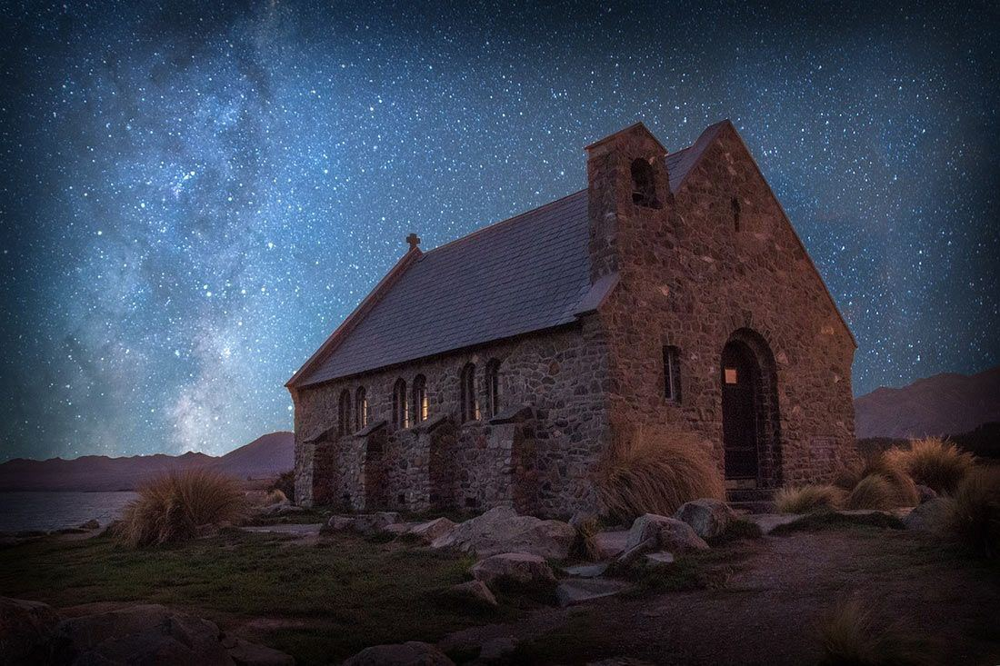
За рулём: 105 км, около 1,5 ч.
Ночуем: Peppers Bluewater в пяти минутах от озера и церкви. В полутора километрах Tekapo Springs, горячие ванны под открытым небом. Удобно сходить перед обсерваторией, пока ждём темноты.
чт
Центральное Отаго: главный винный день
Центральное Отаго это горная пустыня: днём жара, ночью холод. От такого перепада виноград набирает плотность и не теряет кислотность, поэтому здешний пино выходит густым и свежим одновременно. Виноделие здесь началось с нуля в восьмидесятых, а сейчас эти вина ставят рядом с бургундскими.
Как проходит день. Утром едем в Банноберн, в Felton Road. Виноградник заложили в 1991 году, а с начала двухтысячных ведут его по биодинамике: без химии, на компосте, со сверкой работ по календарю. Звучит чудаковато, но винодельню дважды называли лучшей в стране. Визит на два часа: сначала идём по участкам и смотрим, чем отличается земля на соседних склонах, потом садимся и пробуем всю линейку подряд. После обеда Гибстон. В Kinross за один заход пробуешь пятерых небольших виноделов, по паре вин у каждого, а в Gibbston Valley спускаешься в погреб, вырубленный прямо в скале, единственный такой в регионе. Дегустации в этот день, как и в остальные винные дни, оплачиваются отдельно: пьют не все. Кто захочет ещё одну сверх программы, это 25 €.

За рулём: 260 км, около 3,5 ч.
Ночуем: Hotel St Moritz, снова Квинстаун.
пт
Даутфул-Саунд
Дороги в Даутфул нет вообще, поэтому добираемся в три приёма. Сначала катер через озеро Манапоури, минут сорок. Потом автобус по грунтовке через перевал Уилмот, двадцать два километра и час пути. И только на том берегу, у воды, нас ждёт корабль, на котором мы и выходим в сам фьорд. Отвесные стены уходят на километр вверх прямо из воды, на камнях лежат морские котики, в заливе живёт постоянная стая примерно из шестидесяти дельфинов-афалин. В полном варианте мы тут ночуем на борту: каяки, купание, ужин и полная тишина, какой в городе не бывает. В коротком варианте это длинный дневной круиз с возвратом в Квинстаун.
Почему именно этот фьорд. Судоходных фьордов в Фьордленде два. В соседний ведёт асфальтовая дорога: туда каждый день приезжают сотни автобусов, по воде одновременно идут десятки судов, и пройти его можно за два часа. В наш дороги нет вообще, поэтому за день сюда заходит несколько судов на весь фьорд, а площадью он больше соседнего в десять раз. И мы в нём остаёмся на ночь, а не проходим насквозь.
Кто живёт во фьорде. Морские котики лежат на камнях почти в каждый рейс, их увидим почти наверняка. Дельфины-афалины живут здесь постоянно, и лето это как раз пик встреч, но по расписанию они не приплывают. С пингвинами интереснее: малый голубой живёт тут круглый год, и чаще всего его видят в сумерках с тех судов, что остаются на ночь, то есть ровно в нашем длинном варианте. А фьордлендский хохлатый с середины января линяет и в это время сидит на прибрежных камнях, не уходя в море. Мы приходим 14 января, прямо в начало этого окна. Шанс есть, обещать не буду.
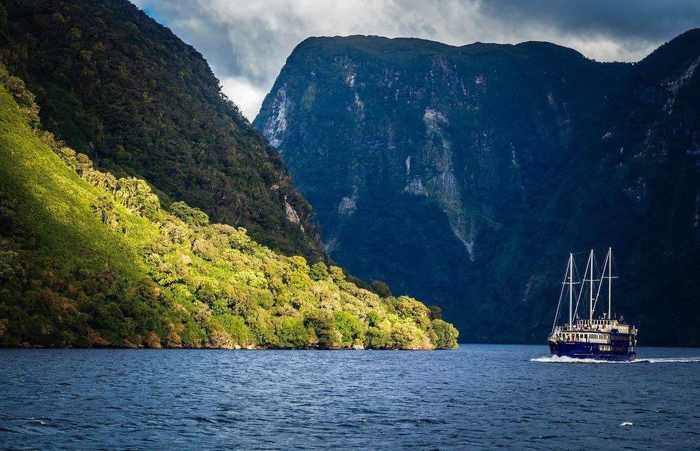
За рулём: 175 км, около 2,5 ч.
Ночуем: Каюта на борту Fiordland Navigator посреди фьорда. В коротком варианте вместо этого ещё одна ночь в Квинстауне.
сб–вс
Гленорчи и последний рывок только в полном
Возвращаемся из фьорда, день в Квинстауне. Дальше дорога на Гленорчи вдоль озера Вакатипу, её регулярно называют красивейшей в стране. В долине Парадайз за ней снимали Лотлориэн и Изенгард из «Властелина колец», и там же до сих пор нет ничего, кроме бродов и грунтовок, поэтому едем на джипах. Днём джетбот по каньону Шотовер: специальная лодка с водомётом идёт по мелкой воде в метре от скал и разворачивается на месте. Вечером большой ужин в старательском Эрроутауне, который вырос во время золотой лихорадки 1860-х.
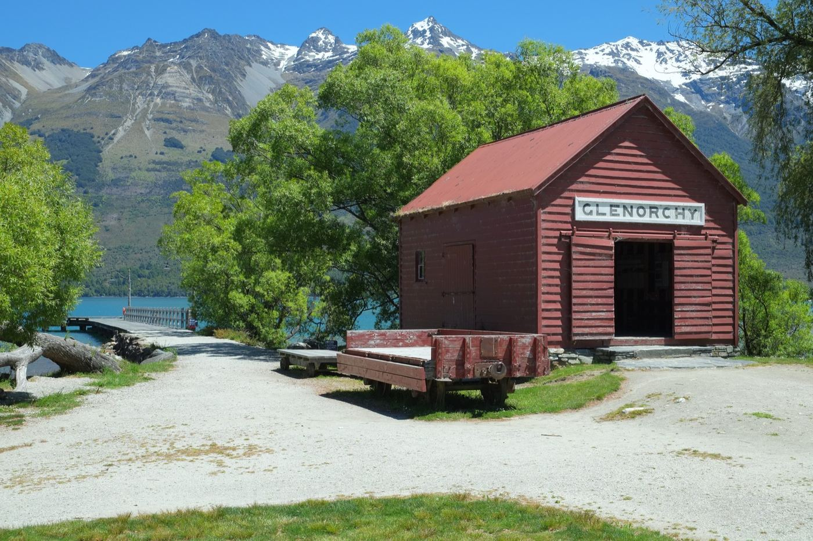
За рулём: 175 км, около 2,5 ч · 95 км, около 1,5 ч.
Ночуем: Hotel St Moritz, последние две ночи в Квинстауне.
пн
Домой
Сдаём машину в Квинстауне, перелёт в Окленд и дальше домой через Шанхай. В Москве мы 18 января. В коротком варианте этот день наступает 13 января, и дома мы 14-го.
За рулём: трансфер, сами не за рулём.